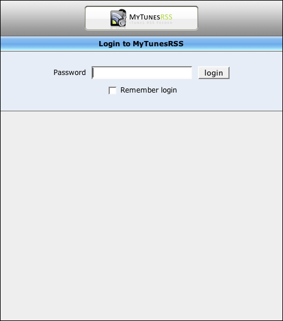

Login
Since the web application is password protected to prevent illegal access, you have to log in first. Enter your password, the one you specified in the server GUI. Check the option "stay logged in" to have a cookie set in your browser which enables automatic login whenever you access the web page. So, do not use this option when working in public environments.
